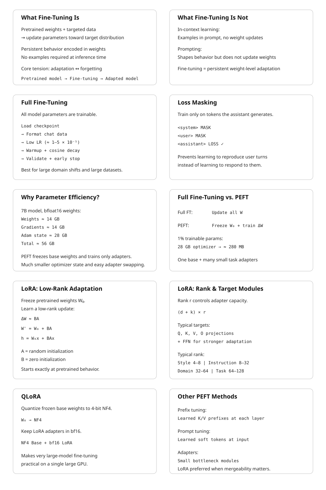

27 Fine-Tuning and Parameter-Efficient Adaptation
The canonical question for this chapter: How do you take a pretrained model and make it reliably good at a specific task or domain and when is it better to update all the weights, a small adapter, or none of them?
27.1 What Fine-Tuning Is and What It Is Not
A pretrained language model is a general-purpose next-token predictor. It has learned, from a large and diverse corpus, a compressed representation of language, factual knowledge, and reasoning patterns. What it has not learned is how to behave usefully in response to a specific type of input, a medical question, a customer support query, a legal document, a Python function stub.
Fine-tuning adjusts the model’s parameters using a smaller, targeted dataset that represents the behavior you want. The optimizer runs the same forward- backward-update loop as pretraining, but on a different data distribution, typically for far fewer steps, and usually with a much lower learning rate. The pretrained weights are the starting point; fine-tuning moves them in the direction that reduces loss on the target distribution.
This is not the same as in-context learning, where the model’s behavior is shaped by examples in the prompt without any weight updates. In-context learning is fast and requires no training, but it is limited by context length and is not persistent: the model reverts to its base behavior as soon as the examples leave the context window. Fine-tuning is persistent: the adjusted behavior is encoded in the weights and requires no prompt-time examples to activate.
It is also not the same as prompting or system prompt engineering. A well-crafted system prompt can substantially shape model behavior, but it cannot install new knowledge or reliably suppress deeply ingrained behaviors. Fine-tuning can do both, within limits set by the pretrained model’s capacity.
The central tension in fine-tuning is between adaptation and forgetting. Every gradient step that reduces loss on the target distribution risks increasing loss on the original distribution. A model fine-tuned aggressively on medical text may forget how to write Python. A model fine-tuned on customer support transcripts may lose nuance in open-ended generation. Managing this tension (adapting without catastrophically forgetting) is the core engineering challenge that parameter-efficient methods address.
27.2 Full Fine-Tuning
27.2.1 The Basic Procedure
Full fine-tuning updates all model parameters. The procedure:
- Load the pretrained checkpoint.
- Format the fine-tuning dataset in the model’s chat template, marking which tokens should contribute to the loss (typically the assistant turns only, not the system prompt or user inputs, which the model cannot control).
- Run the training loop with a low learning rate, typically 1–5 × 10⁻⁵, substantially below the peak learning rate used during pretraining.
- Apply a short warmup (100–500 steps) and cosine decay to near zero.
- Evaluate on a held-out validation split at regular intervals; stop when validation loss plateaus or begins increasing.
27.2.2 Loss Masking
One critical implementation detail: loss masking. In instruction fine-tuning, the model is trained to produce assistant responses to user queries. The model should not receive loss signal for predicting the user’s question, it has no control over what the user asks. Standard practice masks the loss on all non-assistant tokens, computing the cross-entropy only over tokens the model is being trained to generate.
Without loss masking, the model receives gradient signal from predicting the user’s tokens, which teaches it to complete user-turn patterns rather than respond to them. The resulting model generates text that looks like a conversation rather than one side of a conversation, a subtle but consequential difference that is easy to miss and consistently degrades instruction following quality.
Concretely, for a sequence formatted as:
<|system|>You are a helpful assistant.<|end|>
<|user|>What is the capital of France?<|end|>
<|assistant|>The capital of France is Paris.<|end|>The loss is computed only over the tokens in the <|assistant|> turn: “The capital of France is Paris.” The system prompt and user turn are in the input but not in the loss.
27.2.3 Learning Rate Selection
Full fine-tuning is sensitive to learning rate. Too high: the pretrained representations are overwritten before the optimizer can find a stable solution, producing incoherent outputs or loss spikes. Too low: the model does not adapt meaningfully within a reasonable number of steps.
The standard heuristic: use 10–100× lower learning rate than the peak learning rate used during pretraining. For a model pretrained at peak LR = 3 × 10⁻⁴, fine-tuning typically uses 1–3 × 10⁻⁵. Layerwise learning rate decay (applying a lower learning rate to earlier layers and a higher rate to later layers) can preserve general representations in early layers while allowing task-specific adaptation in later layers. Typical decay factor: 0.8–0.9 per layer from the top.
27.2.4 When Full Fine-Tuning Is Appropriate
Full fine-tuning is appropriate when:
- The target distribution is substantially different from the pretraining distribution (medical text, legal text, a specialized programming language).
- The fine-tuning dataset is large enough to justify the parameter count being updated (roughly 100K–1M examples for a 7B model; fewer for smaller models).
- Serving infrastructure allows storing multiple fine-tuned model copies, since each full fine-tune produces a separate set of weights.
- The compute budget permits full fine-tuning: for a 70B model, full fine-tuning requires the same distributed infrastructure as pretraining, since all parameters, gradients, and optimizer state must be held in memory.
For most practitioners working with models above 7B parameters, full fine-tuning is impractical without significant GPU resources. Parameter-efficient methods exist precisely to make adaptation tractable on smaller hardware.
27.3 The Case for Parameter Efficiency
A 7B-parameter model in float16 requires 14 GB for weights alone. Full fine- tuning additionally requires gradients (14 GB) and Adam optimizer state (28 GB): 56 GB total before activations. An H100 has 80 GB; full fine-tuning of a 7B model fits on a single H100, but barely. A 13B model requires 104 GB which exceedes a single GPU’s capacity. A 70B model requires 560 GB for full fine-tuning, seven H100s at minimum, just for optimizer state.
Parameter-efficient fine-tuning (PEFT) methods reduce this cost by updating only a small subset of parameters while holding the pretrained weights frozen. The optimizer state is computed only for the trainable parameters. For a method that trains 1% of parameters, the optimizer state shrinks to 1% of its full fine-tuning size: from 28 GB to 280 MB for a 7B model. The fine-tuned adapter weights are similarly small (a 1% adapter for a 7B model occupies roughly 140 MB) making it practical to maintain many task-specific adapters simultaneously and swap them at inference time.
27.4 LoRA: Low-Rank Adaptation
LoRA (Low-Rank Adaptation, Hu et al., 2021) is the dominant parameter-efficient fine-tuning method in current practice. It is conceptually simple, works across model families without architectural changes, and consistently delivers performance competitive with full fine-tuning at a fraction of the trainable parameter count.
27.4.1 The Core Idea
The hypothesis underlying LoRA: the update to a weight matrix during fine-tuning has low intrinsic rank. That is, the change \(\Delta W\) that fine-tuning would apply to a weight matrix \(W_0 \in \mathbb{R}^{d \times k}\) can be approximated by a low-rank decomposition:
\[ \Delta W \approx BA \]
where \(B \in \mathbb{R}^{d \times r}\) and \(A \in \mathbb{R}^{r \times k}\), with rank \(r \ll \min(d, k)\).
During training, \(W_0\) is frozen and only \(A\) and \(B\) are updated. The forward pass computes:
\[ h = W_0 x + \Delta W x = W_0 x + BAx \]
\(A\) is initialized from a random Gaussian; \(B\) is initialized to zero, so \(\Delta W = BA = 0\) at the start of training and the model begins from exactly the pretrained behavior. As training proceeds, \(A\) and \(B\) adjust to represent the task-specific update.
At inference time, the adapter can be merged: \(W' = W_0 + BA\) is a weight matrix of the same shape as \(W_0\) that incorporates the fine-tuning update. Merging adds zero inference overhead, the merged model runs at identical speed to the base model with no adapter infrastructure required. Alternatively, multiple adapters can be kept separate and swapped at serving time, supporting multi-tenant serving of many fine-tuned models from a single base checkpoint.
27.4.2 Rank and Parameter Count
The rank \(r\) is the primary hyperparameter. For a typical transformer weight matrix with \(d = k = 4096\) (LLaMA 2 7B’s hidden dimension), a LoRA adapter at rank \(r = 16\) has:
\[ (d + k) \times r = (4096 + 4096) \times 16 = 131{,}072 \text{ parameters} \]
The original matrix has \(d \times k = 16{,}777{,}216\) parameters. The LoRA adapter at rank 16 represents 0.78% of the original matrix’s parameters.
For a 7B model where LoRA is applied to all attention projection matrices (Q, K, V, O) and both FFN matrices across 32 layers, at rank \(r = 16\):
\[ \text{Adapters} = 32 \text{ layers} \times 6 \text{ matrices} \times 2 \times 4096 \times 16 \approx 25M \text{ parameters} \]
25 million trainable parameters out of 7 billion total: 0.36%. The optimizer state for these 25M parameters requires approximately 200 MB in float32 Adam. Compare to full fine-tuning’s 28 GB optimizer state.
27.4.3 Which Matrices to Apply LoRA To
The original LoRA paper applied adapters only to the Q and V attention projection matrices, based on the observation that these matrices show the most task-specific variation during full fine-tuning. Subsequent work found that applying LoRA to all attention matrices (Q, K, V, O) and optionally the FFN layers produces better performance at the cost of more trainable parameters.
The current standard for instruction fine-tuning: apply LoRA to Q, K, V, and O projections at rank 16–64. For domain adaptation requiring more substantial weight changes, extend to the FFN up and down projection matrices. For embedding adaptation (useful when the fine-tuning data introduces vocabulary not well-represented in the base model), apply LoRA to the embedding layer as well.
27.4.4 Rank Selection in Practice
The optimal rank depends on the complexity of the adaptation task:
| Task | Typical rank | Trainable params (7B model) |
|---|---|---|
| Style adaptation | 4–8 | 6M–12M |
| Instruction following | 8–32 | 12M–50M |
| Domain adaptation | 32–64 | 50M–100M |
| Task-specific fine-tuning | 64–128 | 100M–200M |
Higher rank captures more of the full fine-tuning update but requires more memory and compute. Ranks above 128 rarely improve over full fine-tuning and sometimes perform worse, suggesting that the low-rank hypothesis breaks down at high ranks: the adapter can represent arbitrary updates, losing the regularization benefit of the low-rank constraint.
27.5 QLoRA: Quantized LoRA
QLoRA (Dettmers et al., 2023) extends LoRA to make fine-tuning of very large models practical on consumer hardware by quantizing the frozen base model weights while keeping the LoRA adapters in full precision.
27.5.1 The Method
The base model weights \(W_0\) are quantized to 4-bit NormalFloat (NF4), a quantization format optimized for normally distributed weights (which transformer weights approximately are). NF4 quantization reduces the base model’s memory footprint by roughly 8× relative to float32, or 4× relative to bfloat16.
The LoRA adapters \(A\) and \(B\) are kept in bfloat16. During the forward pass, \(W_0\) is dequantized from NF4 to bfloat16 for the computation \(W_0 x\), then requantized for storage. The adapter computation \(BAx\) runs in bfloat16 throughout.
Memory for fine-tuning a 65B model with QLoRA on a single A100 80GB: - Base weights in NF4: approximately 33 GB - LoRA adapters in bfloat16: approximately 600 MB - Optimizer state for adapters: approximately 1.2 GB - Activations: approximately 6 GB - Total: approximately 41 GB which fits on a single A100 80GB
Without QLoRA, fine-tuning a 65B model requires a minimum of eight A100s for model weights alone, plus distributed optimizer state across additional GPUs. QLoRA makes this a single-GPU task, with performance within 1–2 percentage points of full fine-tuning on most benchmarks.
27.6 Prefix Tuning and Prompt Tuning
Before LoRA, the dominant parameter-efficient approach was prefix tuning (Li and Liang, 2021) and its simpler variant, prompt tuning (Lester et al., 2021).
27.6.1 Prefix Tuning
Prefix tuning prepends a sequence of learned continuous vectors (the prefix) to the key and value matrices at every attention layer. The prefix vectors are not token embeddings; they are free parameters optimized directly by gradient descent to minimize loss on the fine-tuning task.
Formally, for attention layer \(l\), the prefix tuning method augments the key and value matrices:
\[ K_l' = [P_K^l \| K_l], \quad V_l' = [P_V^l \| V_l] \]
where \(P_K^l\) and \(P_V^l\) are learned prefix matrices of shape \([\text{prefix\_length} \times d_{\text{head}}]\), and \([\cdot \| \cdot]\) denotes concatenation. The model’s attention at each layer can attend to both the prefix vectors and the original sequence.
With a prefix length of 10 tokens and a 12-layer, 768-dimensional BERT-base model, prefix tuning requires: \[ 2 \times 10 \times 768 \times 12 = 184{,}320 \text{ parameters} \]
approximately 0.1% of BERT-base’s 110M parameters. Li and Liang showed that prefix tuning at this parameter count reaches within 0.1–2% of full fine-tuning performance on table-to-text generation and summarization tasks.
27.6.2 Prompt Tuning
Prompt tuning is a simplified version of prefix tuning that prepends learned vectors only to the input embedding layer rather than to every attention layer. The prefix is a sequence of “soft tokens” (continuous vectors that occupy positions before the actual input in the embedding space) that are optimized to steer the model toward the target task.
Lester et al. demonstrated that at model scale (11B parameters), prompt tuning matches full fine-tuning performance with only a few hundred tunable parameters. At smaller scales (below roughly 1B parameters), there is a significant performance gap. This scale-dependence limits prompt tuning’s applicability: it works well for very large models but poorly for the 7B–13B models that practitioners most commonly fine-tune.
LoRA has largely supplanted prefix and prompt tuning in practice because LoRA works well across the full range of model sizes without the scale-dependence limitation and is easier to implement and tune.
27.7 Adapter Layers
Adapter tuning (Houlsby et al., 2019) inserts small bottleneck modules between existing transformer layers. Each adapter consists of a down-projection from the model dimension \(d\) to a bottleneck dimension \(r\), a nonlinearity, and an up-projection back to \(d\):
\[ \text{Adapter}(h) = h + W_{\text{up}} \cdot \text{ReLU}(W_{\text{down}} \cdot h) \]
where \(W_{\text{down}} \in \mathbb{R}^{r \times d}\) and \(W_{\text{up}} \in \mathbb{R}^{d \times r}\). The residual connection ensures that the adapter begins as an identity function when \(W_{\text{up}}\) is initialized to zero.
With \(r = 64\) and \(d = 768\) (BERT-base), each adapter adds \(2 \times 64 \times 768 = 98{,}304\) parameters. With two adapters per layer (after self-attention and after FFN) across 12 layers: approximately 2.4M parameters, or 2.2% of BERT-base.
Adapter layers add inference latency because they introduce extra matrix multiplications in the forward pass. Unlike LoRA, adapter layers cannot be merged into the base weights, the bottleneck structure prevents the algebraic simplification that makes LoRA merging possible. For latency-sensitive applications, this is a meaningful disadvantage. LoRA has largely replaced adapter layers as the preferred PEFT method, precisely because LoRA can be merged at inference time while adapters cannot.
27.8 LoRA Variants and Extensions
27.8.1 DoRA: Weight-Decomposed Low-Rank Adaptation
DoRA (Liu et al., 2024) decomposes the weight matrix into magnitude and direction components and applies LoRA to the direction component only:
\[ W' = \frac{m}{\|W_0 + BA\|_c} (W_0 + BA) \]
where \(m\) is a learned magnitude vector and \(\|\cdot\|_c\) is the column-wise norm. By separating magnitude adaptation (a scalar per column) from directional adaptation (the LoRA component), DoRA improves performance on tasks requiring both fine-grained feature adjustment and large-scale representation changes. DoRA consistently outperforms LoRA at the same rank, with minimal additional parameter overhead from the magnitude vectors.
27.8.2 LoRA+
LoRA+ (Hayou et al., 2024) observes that the optimal learning rates for the \(A\) and \(B\) matrices in LoRA are not equal. The \(B\) matrix, initialized to zero, starts with zero gradient and requires a higher learning rate to adapt quickly. The \(A\) matrix, initialized randomly, starts with larger gradients and benefits from a lower learning rate. LoRA+ sets a fixed ratio between the \(A\) and \(B\) learning rates (typically 16×), improving convergence speed with no additional parameters or architectural changes.
27.8.3 VeRA: Vector-based Random Matrix Adaptation
VeRA (Kopiczko et al., 2024) takes the low-rank hypothesis further. Rather than training full \(A\) and \(B\) matrices, VeRA uses fixed random matrices \(A\) and \(B\) (not trained) and trains only scalar vectors \(d\) and \(b\) that scale the columns of \(B\) and \(A\) respectively:
\[ \Delta W = \Lambda_b B \Lambda_d A \]
where \(\Lambda_b\) and \(\Lambda_d\) are diagonal scaling matrices. VeRA reduces the trainable parameter count to roughly 1.6M for a 7B model — an order of magnitude below LoRA at rank 16 — while achieving 90–95% of LoRA’s performance on most tasks. For extremely memory-constrained settings, VeRA extends the PEFT frontier further toward the “train almost nothing” extreme.
27.9 Instruction Fine-Tuning
Instruction fine-tuning which is training a base model to follow natural language instructions, deserves its own treatment because it is the most consequential application of fine-tuning in practice. It is what transforms a base model (a powerful but unruly next-token predictor) into an assistant (a model that reliably responds to requests).
27.9.1 The Data Format
Instruction fine-tuning data consists of (instruction, response) pairs, often with an optional context or system prompt. These are formatted using the model’s chat template and trained with loss masking on the response tokens:
<|system|>
You are a helpful, harmless, and honest assistant.
<|end|>
<|user|>
Explain the difference between supervised and unsupervised learning.
<|end|>
<|assistant|>
Supervised learning trains a model on labeled examples — pairs of input
and desired output — while unsupervised learning finds structure in
unlabeled data without explicit targets. In supervised learning, the
training signal is the error between predictions and labels...
<|end|>27.9.2 Data Volume and Quality
The surprising finding from early instruction tuning research (Wei et al., 2022; Sanh et al., 2022) was that a small number of high-quality instruction-response pairs (on the order of 1,000 to 50,000 examples) can substantially improve instruction following, even for models with billions of parameters. FLAN (Wei et al., 2022) showed improvements from fine-tuning on 60 tasks; Alpaca (Taori et al., 2023) used 52,000 GPT-3.5-generated examples to produce a competitive instruction follower from LLaMA.
More recent work has established that quality matters more than quantity. The LIMA paper (Zhou et al., 2023) trained on only 1,000 carefully curated examples and produced a model competitive with those trained on orders of magnitude more data. The implication: instruction tuning teaches the model a format and response style, not new knowledge. The knowledge is already in the pretrained weights; fine-tuning activates it in the right pattern. Given this, a small number of high-quality demonstrations suffices to establish the pattern; low-quality examples dilute the signal without contributing knowledge.
27.9.3 Multi-Task Instruction Tuning
Training on diverse instruction types improves generalization beyond any single task. FLAN-T5 (Chung et al., 2022) fine-tuned on 1,836 tasks from 473 datasets, covering classification, generation, reasoning, translation, and summarization. The diversity prevents the model from overfitting to the instruction format of any single task family and produces a model that generalizes to instruction formats not seen during fine-tuning.
The practical lesson: instruction fine-tuning datasets should sample broadly across task types, domain contexts, response lengths, and instruction phrasings. A dataset that is narrow in any of these dimensions will produce a model that responds well to instructions resembling those in the training set and poorly to others.
27.10 Catastrophic Forgetting and How to Manage It
Fine-tuning on a narrow distribution degrades performance on the original distribution. This is catastrophic forgetting: the gradient updates that improve performance on the target task also move weight values away from configurations that support the base model’s broader capabilities.
The empirical pattern: catastrophic forgetting is most severe when the fine-tuning distribution is very different from the pretraining distribution, when the learning rate is high, when training runs for many epochs, and when the fine-tuning dataset is small. Any of these conditions allows the optimizer to move weights far from the pretrained values.
27.10.1 Mitigation Strategies
Data mixing. Include a fraction of general-purpose data (from the original pretraining distribution or a proxy for it) alongside the fine-tuning data. A mixing ratio of 5–20% general data is typically sufficient to substantially reduce forgetting while minimally degrading task-specific performance. The cost is a slight reduction in task performance, since some gradient steps go toward maintaining general capability rather than improving task performance.
Lower learning rates and fewer epochs. The most direct lever. Running for 1–3 epochs at 1 × 10⁻⁵ learning rate causes less forgetting than running for 10 epochs at 5 × 10⁻⁵. Early stopping on validation loss prevents overadaptation.
LoRA as implicit regularization. Because LoRA constrains weight updates to a low-rank subspace, it intrinsically limits how far the adapted weights can deviate from the pretrained values. Full fine-tuning allows arbitrary weight changes; LoRA allows only rank-\(r\) changes. This acts as a regularizer that reduces catastrophic forgetting, which is one reason LoRA often matches full fine-tuning quality while using far fewer resources.
27.11 Serving Multiple Fine-Tuned Models
A significant operational advantage of LoRA over full fine-tuning is the ability to serve multiple fine-tuned models from a single base checkpoint.
With full fine-tuning, each fine-tuned model is a separate set of 7B (or 13B, or 70B) weights. Serving \(N\) fine-tuned models requires \(N\) full model copies in memory, or dynamically loading models from storage at request time, which introduces unacceptable latency.
With LoRA, the base model weights are shared across all adapters. Serving \(N\) LoRA-fine-tuned models requires one copy of the base weights (14 GB for 7B bfloat16) plus \(N\) small adapters (roughly 150 MB each at rank 16 for a 7B model). For \(N = 100\) adapters, the memory footprint is approximately 29 GB versus 1,400 GB for full fine-tuning.
27.12 Choosing Between Fine-Tuning Approaches
The decision between full fine-tuning, LoRA, QLoRA, and other PEFT methods depends on available hardware, dataset size, performance requirements, and operational constraints.
| Scenario | Recommended approach |
|---|---|
| 7B model, 1× A100 80GB, large dataset | Full fine-tuning or LoRA rank 64 |
| 7B model, 1× consumer GPU (24 GB), any dataset | QLoRA rank 16–32 |
| 13B–70B model, limited GPUs | QLoRA rank 16–64 |
| 70B+ model, large GPU cluster | Full fine-tuning with FSDP |
| Many tasks from one base model | LoRA rank 16, separate adapters per task |
| Very small dataset (<1K examples) | LoRA rank 4–8, with data mixing |
| Minimal memory, acceptable quality drop | VeRA |
A practical benchmark for 7B models: LoRA rank 16 trained for 3 epochs on 50,000 instruction pairs runs in approximately 4–6 hours on a single A100 80GB and consistently achieves 95–98% of full fine-tuning quality on instruction- following benchmarks. This is the most common fine-tuning workload in practice and the appropriate baseline for evaluating whether a more expensive approach is warranted.
27.13 Key Takeaways
- Fine-tuning adjusts a pretrained model’s behavior using a targeted dataset; it is persistent (encoded in weights), unlike in-context learning, and installs behavioral patterns rather than new knowledge.
- Loss masking on non-assistant tokens is essential for instruction fine-tuning: computing loss over user turns teaches the model to complete conversations rather than respond to them.
- Full fine-tuning requires optimizer state equal to roughly 4× the weight memory in float32 Adam; a 7B model needs approximately 56 GB for weights, gradients, and optimizer state combined.
- LoRA freezes base weights and trains low-rank updates \(\Delta W = BA\) with \(r \ll d\); at rank 16 on a 7B model, this trains approximately 25M parameters (0.36% of total) while achieving 95–98% of full fine-tuning quality.
- LoRA adapters can be merged into base weights at inference time (\(W' = W_0 + BA\)), adding zero latency overhead compared to the unmodified base model.
- QLoRA quantizes base weights to 4-bit NF4 and trains LoRA adapters in bfloat16, reducing fine-tuning memory for a 65B model from 500+ GB to approximately 41 GB — fitting on a single A100 80GB.
- Instruction fine-tuning data quality dominates quantity: LIMA demonstrated that 1,000 carefully curated examples produce competitive instruction following, because fine-tuning teaches response format rather than knowledge.
- Catastrophic forgetting is mitigated by data mixing (5–20% general data), low learning rates (1–5 × 10⁻⁵), short training runs (1–3 epochs), and LoRA’s intrinsic low-rank regularization.
- Multi-adapter serving from a shared base model requires one base checkpoint plus small adapter files (~150 MB each); 100 LoRA adapters for a 7B model occupy ~29 GB versus ~1,400 GB for 100 full fine-tuned copies.
- DoRA improves over LoRA by decomposing weight updates into magnitude and direction; LoRA+ improves convergence by using a 16× higher learning rate for \(B\) than \(A\); VeRA reduces trainable parameters to ~1.6M for a 7B model using fixed random matrices with learned scalars.

27.14 Further Reading
Hu, E. J., Shen, Y., Wallis, P., Allen-Zhu, Z., Li, Y., Wang, S., Wang, L., & Chen, W. (2021). LoRA: Low-Rank Adaptation of Large Language Models. ICLR. — The founding paper; the low-rank weight update hypothesis and the merge-at-inference property are introduced here; the GPT-3 fine-tuning experiments establish the quality-efficiency tradeoff clearly.
Dettmers, T., Pagnoni, A., Holtzman, A., & Zettlemoyer, L. (2023). QLoRA: Efficient Finetuning of Quantized LLMs. NeurIPS. — Introduces NF4 quantization, double quantization, and paged optimizers; the 65B fine-tuning on a single GPU result is the key empirical contribution.
Li, X. L., & Liang, P. (2021). Prefix-Tuning: Optimizing Continuous Prompts for Generation. ACL. — Introduces prefix tuning; the comparison to full fine-tuning on table-to-text and summarization tasks is the key evaluation; the soft prompt interpretation motivates the design.
Houlsby, N., et al. (2019). Parameter-Efficient Transfer Learning for NLP. ICML. — Introduces adapter layers; the bottleneck architecture and the near-full-fine-tuning performance at 3% parameter overhead established parameter-efficient fine-tuning as a serious alternative to full fine-tuning.
Zhou, C., Liu, P., Xu, P., Iyer, S., Sun, J., Mao, Y., Ma, X., Efrat, A., Yu, P., Yu, L., Zhang, S., Ghosh, G., Lewis, M., Zettlemoyer, L., & Levy, O. (2023). LIMA: Less Is More for Alignment. NeurIPS. — Demonstrates that 1,000 high-quality instruction examples suffice for competitive alignment; the central argument that fine-tuning teaches format rather than knowledge is stated and supported clearly.
Chung, H. W., et al. (2022). Scaling Instruction-Finetuned Language Models. JMLR. — The FLAN-T5 paper; systematic evaluation of instruction tuning across 1,836 tasks demonstrates that task diversity is the primary driver of generalization beyond the fine-tuning distribution.
Liu, S.-Y., et al. (2024). DoRA: Weight-Decomposed Low-Rank Adaptation. ICML. — Introduces magnitude-direction decomposition; the consistent improvements over LoRA across NLP and vision tasks make it the strongest current alternative to base LoRA.
Kirkpatrick, J., et al. (2017). Overcoming catastrophic forgetting in neural networks. PNAS. — Introduces Elastic Weight Consolidation; the Fisher information regularization framing is the key theoretical contribution; the sequential task learning experiments establish the catastrophic forgetting problem quantitatively.